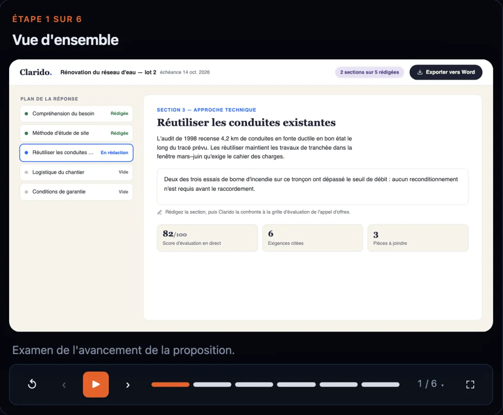

Show. Don't Tell.
Vistaro is a command-line tool for your coding agent. The agent writes an HTML copy of your app's screen and a script of clicks, typing and captions; Vistaro turns them into product videos, help guides, marketing reels and interactive tours, in every language. No screen recording, and when your UI changes, it rebuilds them.
- Free and open source
- Runs on your machine, no API key
{ "meta": { "title": "Draft a proposal response", "app": "Clarido" },
"steps": [
{ "id": "progress", "time": "2.2s", "action": "highlight",
"target": ".section-count",
"title": "Check what is left",
"subtitle": "Two of five sections are drafted." },
{ "id": "open-section", "time": "4.4s", "action": "click",
"target": "#item-3", "title": "Open the section" },
{ "id": "draft", "time": "6.4s", "action": "type",
"target": "#editor-type-target",
"value": "We will ensure rigorous compliance…",
"title": "Draft the response" },
{ "id": "zoom", "time": "9.6s", "action": "camera",
"target": "#text-editor", "scale": 1.15 },
{ "id": "export", "time": "13.4s", "action": "highlight",
"target": "#btn-export",
"title": "Export when ready" }
] }
<header> <span class="section-count"> 2 of 5 sections drafted </span> <button id="btn-export"> Export to Word </button> </header> <!-- the outline, the editor, the evaluation score: plain HTML and CSS, written by the agent from your UI -->
Trimmed for reading: 5 of the timeline's 9 steps, and the top of the screen. The full files are on GitHub: the timeline and the screen. Every selector in the timeline points at the screen.
-
Install vistaro as a dev dependency (npm install --save-dev vistaro, then npx playwright install chromium), read node_modules/vistaro/AGENTS.md, and create a product demo of the main screen of the app. Explore what vistaro offers and use the appropriate animations and transitions. Display a cursor as needed.
The agent writes the two files under The source, checks them, and renders the demo.
One prompt, typed into a coding agent from the app's folder. The result is a normal change in your repo that you review before keeping it.
One timeline, every format your team asks for
From one timeline, Vistaro builds a demo video, a help guide, a homepage loop, an interactive tour and every language, for desktop and phone. Ask for the formats you need, when you need them.
A demo video, ready to post
The cursor, the clicks, the typing, the zoom and the captions are all in the video. Want a voice? Write a line of narration per step and it's read over the video.
demo.mp4the videodemo.vttsubtitles for any player

A step-by-step help article
Every titled step becomes a numbered instruction with its own screenshot, already highlighted and cropped. Below are steps 2 and 3 of the guide made from this walkthrough. Publishing it is copying a folder.
guide.mdfor your docs siteguide.htmla standalone pageguide.jsonfor your own help center

A short loop for your homepage
Silent, looping, made to autoplay on a homepage or in a launch post. It starts when it scrolls into view. This one shows a question answered in Clarido's pipeline view.
clip.mp4 · .webmfor the webclip.giffor email and READMEsembed.htmldrop-in, plays in view

Every language, same choreography
The French version reuses the English timeline step for step. Only the words change: one strings file and the translated screen. Dates, numbers and currencies follow the locale too.
locales/fr/the translated screenstrings.fr.jsontitles and captions
Your agent does the work, you review the diff
Vistaro is a command-line tool with a manual written for coding agents. You ask once; the demo lands in your repo like any other change.
-
Ask your agent
One prompt in your coding agent (Claude Code, OpenAI Codex or Google Antigravity), from your project. The agent installs Vistaro, reads its manual and takes it from there.
Install vistaro as a dev dependency (npm install --save-dev vistaro, then npx playwright install chromium), read node_modules/vistaro/AGENTS.md, and create a product demo of my site.
The agent installs it with
npm install --save-dev vistaro; Get started has the details. Needs Node 20.6 or later. -
It writes two files
A screen that mirrors your UI, and a timeline that says what happens when: click here, type this, zoom there, with a caption for each step.
-
It checks its work, then renders everything
Before rendering, Vistaro replays the demo and reports anything off, like a button that isn't on screen or a zoom aimed at empty space. The agent fixes it like a failing test. When your UI changes, ask again: only the demos that changed are rebuilt.
demo/ index.html the screen anim.config.json the timeline locales/fr/ in French demo.mp4 + .vtt the video guide/ the help article tour-out/ the tour
Why not a screen-capture tool?
Arcade, Supademo, Storylane, Scribe and Tango record your screen into an editor. Vistaro keeps the demo as source.
| Question | Capture tools | Vistaro |
|---|---|---|
| What you keep | Screenshots and clips in a vendor's editor | Two text files in your own repo |
| When the UI changes | Someone records it again | Ask your agent; only what changed is rebuilt |
| Formats | Usually one per tool | Video, help guide, reel and tour from one timeline |
| Languages | One recording per language | One strings file per language |
| Who does the work | You, clicking through the app | Your coding agent |
Who it's not for: if you want to click through your app once and drag hotspots in an editor, a capture tool will get you there faster. Vistaro pays off when demos change often, ship in several languages, and live in a repo your agent already works in.
Questions
Anything else? Ask on GitHub.
Does it need an API key, or any LLM?
Can it record our real app, not just a mockup?
Can we keep demos of unreleased features private?
What do I need to run it?
npm install --save-dev vistaro, then npx playwright install chromium for the browser used for recording (about 150 MB). ffmpeg is bundled. Narration is optional: OpenAI voices when a key is set, otherwise the macOS voice.Your next demo is one prompt away.
It's free and open source. Paste one prompt into your coding agent, then review the demo it makes like any other change.
Thinking about a hosted version for viewer analytics, lead capture or a shared help center? Tell us what you'd use it for on GitHub.